ODOO - SALES USER GUIDE
CONTENT
1. PREFACE
2. OBJECTIVE
3. SALES MODULE PROCESS FLOW
4. USER ROLE DEFINITION
5. SALES MODULE FUNCTIONALITIES:
5.1.LEAD
5.2.OPPORTUNITY
5.3.CUSTOMER CREATION
5.4.PRODUCT CREATION
5.5.QUOTATION CREATION
5.6.ORDER CONFIRMATION
5.7.POST ORDER CONFIRMATION
1. PREFACE
Sales operation marks the beginning / starting point of any business processes in any enterprise. By introducing sales module in SecurEyes ERP platform, the automation process has begun right from the word GO. Sales module has made the entire sales process a real-time operation and has paved ways for making sales department fully automated and readily available. The Sales Module comprises of two Sub Modules namely CRM (Customer Relationship Management) and SALES. The sales process starting from customer enquiry for services i. e ‘LEAD’ Stage to ‘OPPORTUNITY’ Conversion Stage to ‘QUOTATION’ Preparation Stage to ‘ORDER’ Confirmation Stage, all the mentioned activities which forms an integral part of the Sales Process are now fully automated and on ERP system. Built on the ERP system, the sales department does not further need any offline data processing and storage. Reports vital to the management for information and decision making can be generated through the system. Outcome of sales module is also vital feed for Project Management module and Accounts module. With introduction of sales module in ERP, sales process has not only automated but has made it less time consuming, more efficient and effective, taking a leap forward towards making SecurEyes work culture highly professional.
2. OBJECTIVE
The objective of this Sales User Guide document is to serve as a guide to the first timer/new user, while taking them through the end-to-end Sales Process in Odoo, and be readily available as a ready reckoner for future reference. The document also aims to ensure that all the data which is being entered by the User, in Odoo ERP System, are correct and vetted before they are saved, to be used by the various departments i.e. Sales/Project/Accounts / Management for meeting their respective requirement. This document will help to bring out uniformity in data feeding, its maintenance and thus mitigate any ambiguity surfacing in future.
3. SALES MODULE PROCESS FLOW
Sales Module consist of Customer Relationship Management (CRM) as Sub-Module. The user can initiate the generation of any opportunity through CRM. The complete cycle of conversion from any received inquiry into Sales Order can be done by using integrated Sales module.
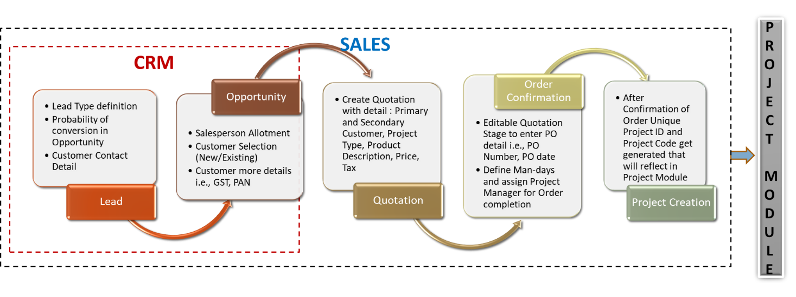-> CRM SUB-MODULE PROCESS:
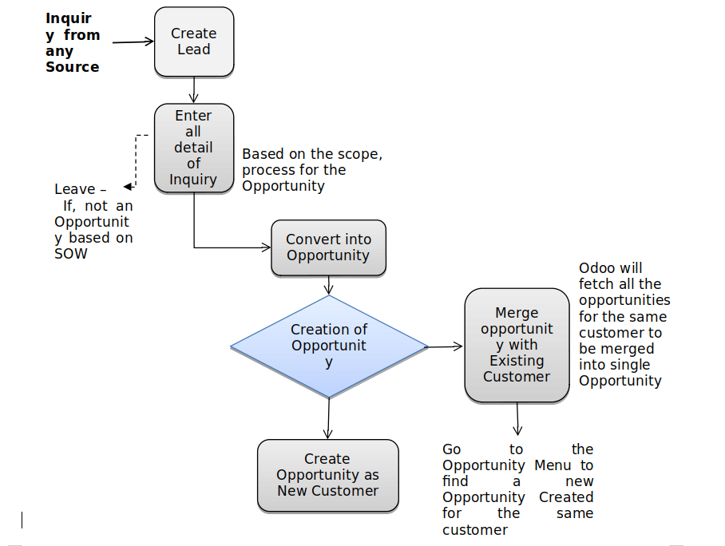-> SALES MODULE PROCESS:
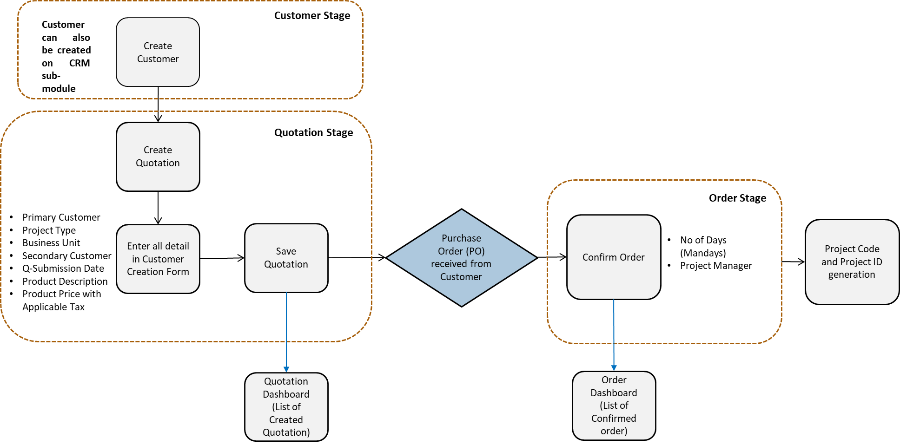4. USER ROLE DEFINITION
The role-based access to be provided to each user. Following table shows the activities can be done by different user as per access level in Odoo Sales module:
5. SALES MODULE FUNCTIONALITIES:
5.1 LEAD:
A lead is the first step of the sales funnel. A Lead in Odoo may be an enquiry for services from a prospective customer or a contact. In other words, a Lead is a potential customer who expresses interest in our services through various means of communication e.g., e-mail, phone call, etc. When a client makes an enquiry about our services, that can be defined as a LEAD. This Lead may have a chance to become an Opportunity later. Depending on the business workflow and needs, we may require assigning the incoming new LEADS to different sales team or even to specific salesperson to take it further. Where the same activity done manually can be tedious and time consuming – and hence to mitigate and expedite the process, Odoo CRM allows you to automate the process of LEAD Assignation based on specific criteria such as location, etc. With specific workflows and precise rules, we will be able to distribute all our LEADS / OPPORTUNITIY automatically to the right sales teams and/or salesman.
-> LEAD CREATION:
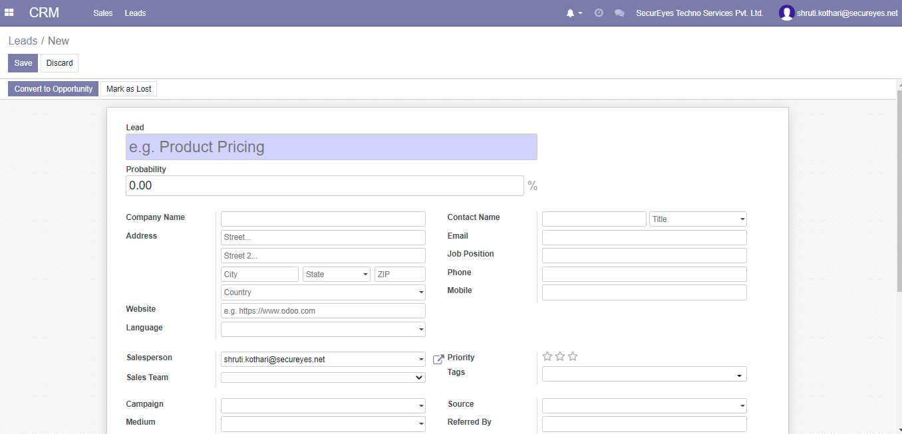In the lead creation form, the user can select a customer and link that customer to this lead. It is also possible to create a customer profile dynamically if there is no customer record exists in your system. There are some optional fields such as email, contact name, job position, mobile, phone, fax, etc. are available. The corresponding salesperson’s details who creates this lead will be automatically filled.
5.2 OPPORTUNITIY:
An Opportunity can be viewed with a high probability for closing. This step is the immediate next step after a Lead is created and conferred as a Prospect. A sales Opportunity is a qualified prospect who has a high probability of becoming a customer and hence, it carries more weightage than a Lead. Lead is an unqualified contact, while an Opportunity is a qualified contact moving to the sales Process. Hence, to turn a Lead into an Opportunity/Prospect, one has to take the Lead through the Sales Qualification Process to assess if our services are sought by the prospective customer.
-> CONVERT OPPORTUNITIY:
In the lead creation form, the user can select a customer and link that customer to this lead. It is also possible to create a customer profile dynamically if there is no customer record exists in your system. There are some optional fields such as email, contact name, job position, mobile, phone, fax, etc. are available. The corresponding salesperson’s details who creates this lead will be automatically filled.
The user can convert a Lead to Opportunity and track it more efficiently from the pipeline. To convert a created lead to opportunity, go to:- Leads, select the lead and click convert to opportunity.
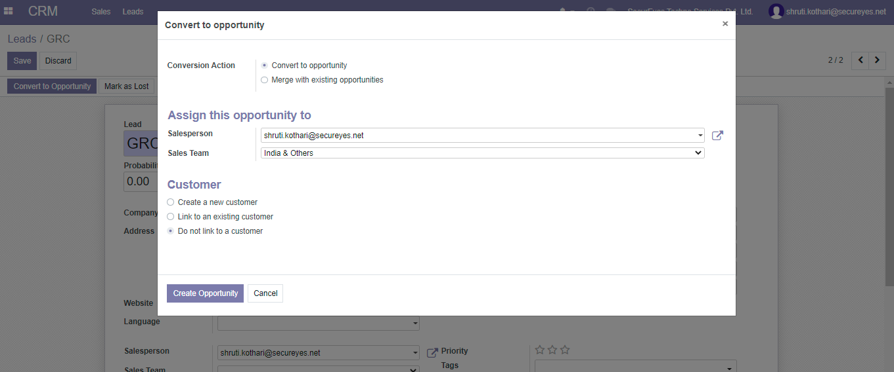
If user select the conversion action ‘Convert to opportunity’, then a new opportunity will be created. If ‘Merge with existing opportunities’ is selected, then a new option will appear which will allow user to select the opportunities.
This opportunity can be assigned to a salesperson and his team. While creating the opportunities, it is optional to link it with a customer. If user select the option ‘Do not link with a customer’, then no customer will be linked with. There are other options available to link with an existing customer or to create a new customer and link with him.
Instead of converting a lead to an opportunity User can also create an opportunity directly from Sales to My Pipeline to Create
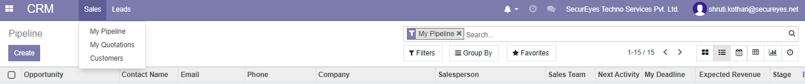
5.3 CUSTOMER CREATION:
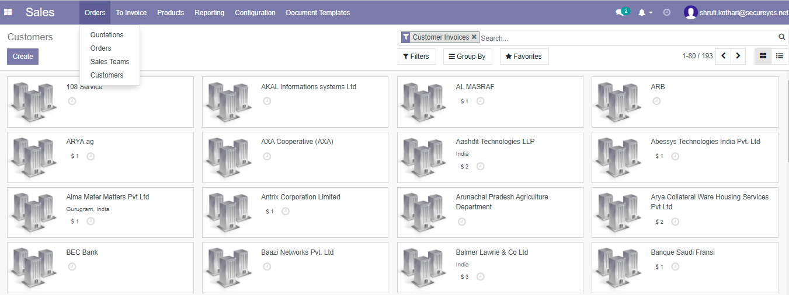-> CREATE CUSTOMER:
To create a Customer, the user need to click the CREATE button. It shows a form to create a new customer record. Customer form contains fields such as Name of the individual/company, Company Address, VAT/GST, Phone, Mobile, Email, Website Link, customer Tags Etc.. It is possible to add multiple contacts inside a customer form, where for each contact the user can provide Contact address, Invoice Address, Delivery address, private and other addresses. The user can manage sales, purchase, inventory, and accounting information of the customer by providing some related details. The user can also add partner and Internal customer detail inside this form.
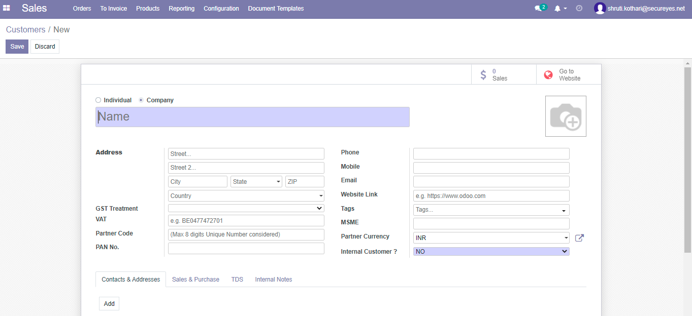5.4 PRODUCT CREATION:
With the Odoo Sales module product management and viewing the same has become easier and convenient. The user can access any Products directly from the dashboard of the sales module
-> DESHBOARD:
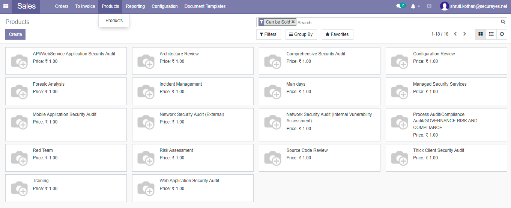There are many filtering, grouping, and favorite options available in the dashboard.
-> CREATE PRODUCT:
Inside the product configuration form, the user can specify the details of a product including product image, product name, product type, procurement details, sales and purchase information.
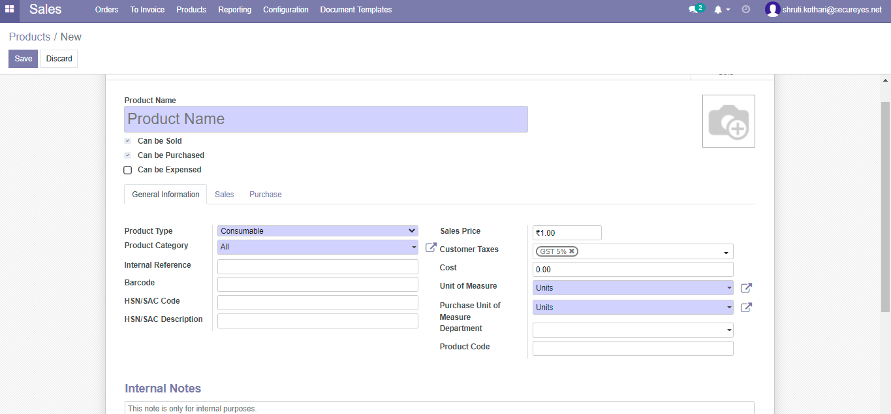5.5 QUOTATION CREATION:
-> DESHBOARD:
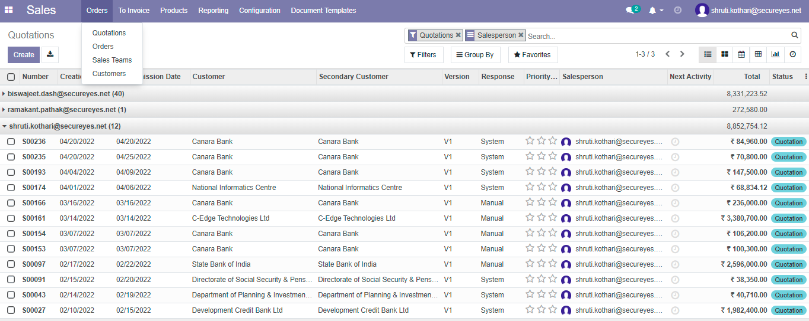The image given above shows the dashboard of the Sales module. The dashboard opens with the Quotations for user to get instant access to the quotations. All the created quotations appear in this space and if the user wants to create a new quotation, user has to click the CREATE button from the dashboard.
-> CREATE QUOTATION:
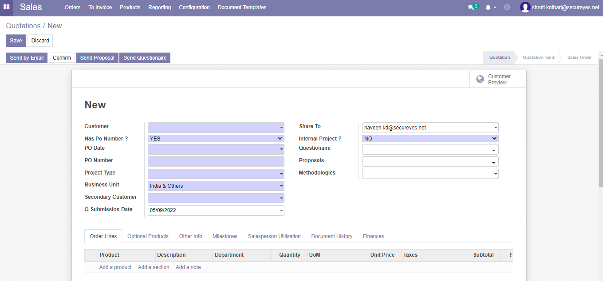In Quotation form, following details to be filled as mandatory:
• Customer: Primary Customer to whom Quotation to be sent
• Has PO Number: The user with find two options i.e. YES/NO
• No: At Quotation stage user need to select NO option, since PO is not received.
• Project Type: The service/ product to be offered to Customer
• Business Unit: The service belongs to which business unit i.e. SBI or Others / India or Others
• Secondary Customer: The customer who is the end customer for a Primary Customer. It can be same as primary customer, in case of separate Secondary Customer is not available
• Q-Submission Date: The last date of the Quotation submission.
• Share-To: The stakeholder who get notification about the Quotation / Order creation for record.
• Internal Project: If PO is issued by partner entity to India entity for any services.
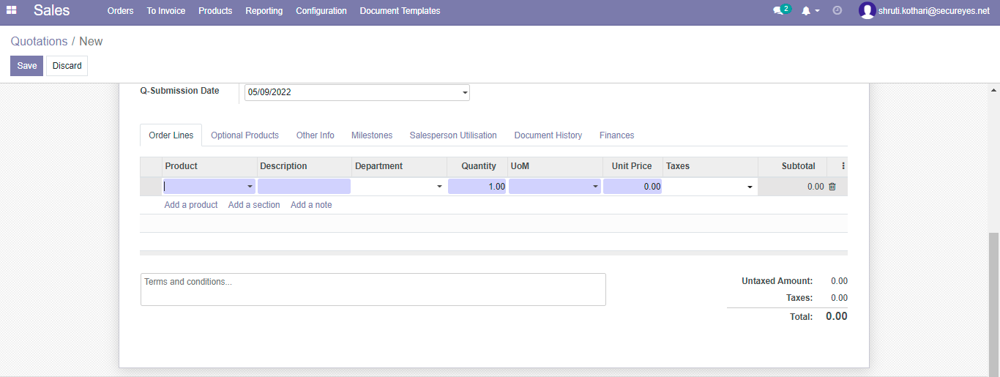
Add a product: The information related to product to be offered to customer i.e. product/service type, description of the product, Quantity along with Unit Price and applicable Taxes. System will automatically calculate Total price of the product based on the untaxed and tax amount.
The user can save and send the quotation form here. After saving the Quotation a unique Quotation Number gets generated by system.
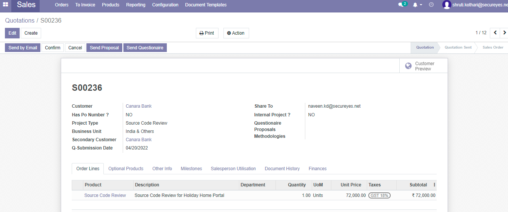
The user needs to enter the details and click on save or send by mail and the process is complete for creating a Quotation. The quotation details will be available on the dashboard of your sales module for review and checking progress.
With the help of the pivot view of Sales module the user can view quotations in graphical format. This can help to filter and organize all quotations. The user can calculate the data and the proceedings on certain quotations from the graphs. Choose to view the data in graph format and the data will be converted to the graph.
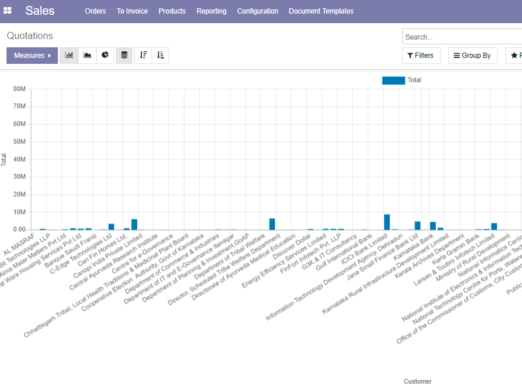
5.6 ORDER CONFIRMATION:
The customer receives the quotation and if they are interested with the deal, they release a Purchase Order (PO) against the quotation for particular product/ service to the service. Based on verifying the details mentioned in PO, the user can confirm the Quotation in Odoo.
-> DESHBOARD:
The dashboard of Order shows the list of confirmed order.
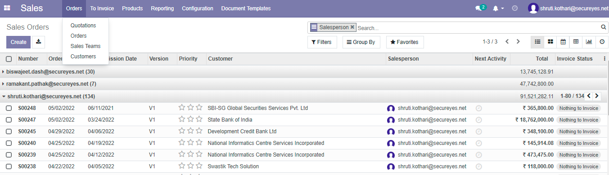-> CONFIRM ORDER:
The user can confirm the Quotation in Odoo by clicking on the CONFIRM button.
Once PO is received from the client, user need to edit the Quotation form for the field ”Has PO Number” with YES option for confirming order in Odoo.
• YES: Clicking on YES, system will ask to enter PO Date and PO Number. In this case user need to enter PO date and Number mentioned on PO.
A pop-up window comes on clicking CONFIRM button. The user requires to enter following details to confirm any Order.
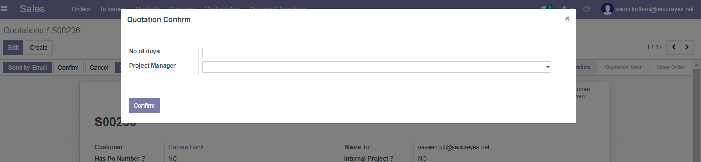
• No of Days: Man-days to be required to implement the project
• Project Manager: Email-ID of the person from project team who is responsible for executing entire project by allocating task to his team member.
After clicking of CONFIRM button, the Order has been created and the user can view /manage the Order from Dashboard.
5.7 POST ORDER CONFIRMATION:
After confirming any order from Sales Module, a Unique Project Code and Project ID gets generated. The same is reflected in Project Module. The project code and project ID are the identity of any project to be implemented and it is used to define/ allocate the task to the project execution team.